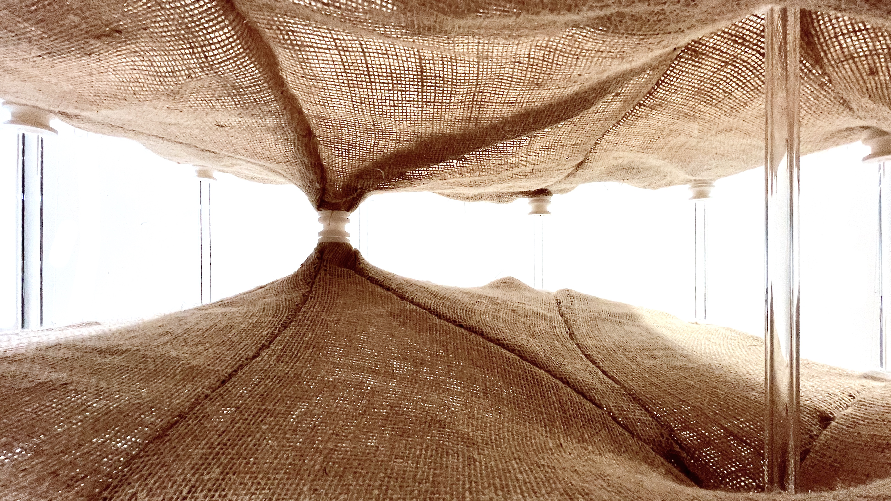
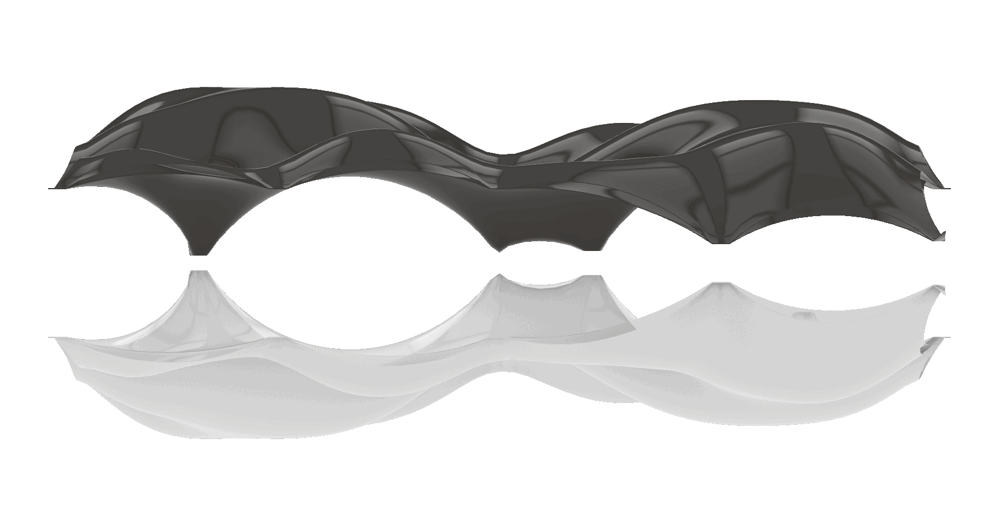
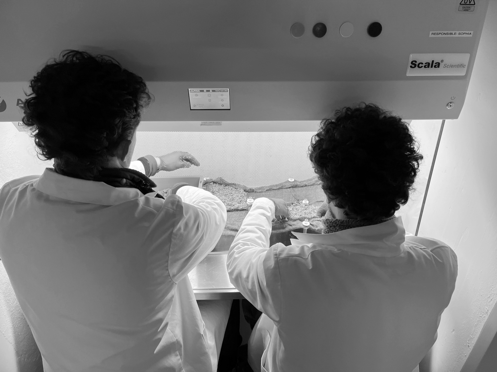

IAB, together with Lancelot Burwell,
develops “Zwischendecke – The Space in Between.”
With this project, both are invited
to present their model
in the 2025 exhibition at the Kunsthalle Zürich.
The project experiments with
mycelium
a new bio-based technology
that grows within layers of textile
and gradually hardens the soft fabric
into a rigid structural element.
The complex vaulted geometry
is visually programmed in Grasshopper,
where the hanging membranes and their mirrored forms
are generated through parametric design.



